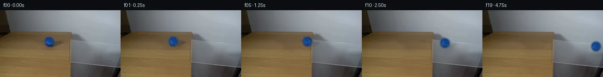
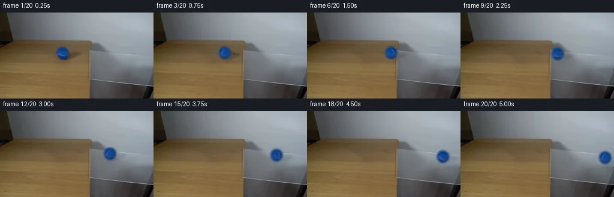
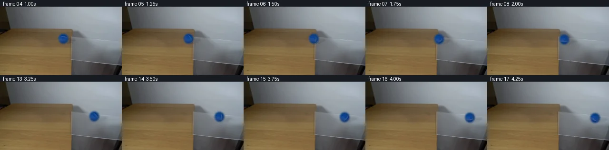

V0 · 初版 · 最终提交
![]()
Observable Generation Trace
把最终像素视频、Harness 冻结的每轮候选、真实工具事件和 Agent 自述放在同一页。可观测证据与模型自述分开标记，避免把“模型说它检查过”误当成真实工具调用。
![首帧]()
Static locked-off single-shot with fixed frame throughout filmed with constant framerate in real-time. The scene shows a realistic scientific demonstration. The scene only contains the described setup and actions. A piece of clear glass resting on the edge of a light-colored wooden table against a plain white wall. The blue tennis ball rolls from the wooden table over the glass.
首帧显示在左侧播放器初始画面。Track 权限、隔离和 tensor 一致性来自 run manifest，而不是 METHOD.md。
默认勾选初版和最终版；可选其他版本一起同步播放。仅检查图更新的连续重复快照已合并，回退旧视频仍保留为一次修订。
Observable events
来源：events.jsonl + run manifest
events.jsonl 可验证该 Agent 成功读取了 36 张 PNG；上面的 round 图不等同于读取次数，而是 Harness 独立冻结的候选。
Frozen candidates
每张图来自该 round 的真实 00 / 01 / 05 / 10 / 19 帧

pixels 5edacaf69aa3eb02 · code 4adcb23a33222004
--- previous/generate.py
+++ current/generate.py
@@ -0,0 +1,256 @@
+"""
+PixelWorld generation: blue tennis ball rolling from the wooden table over
+the clear glass sheet.
+
+Method (local pixel operations only):
+1. A clean background plate is built by fitting a smooth 2-D illumination
+ field to the wood and adding back horizontally shifted wood grain, so the
+ ball and its contact shadow can be removed from frame 0.
+2. The contact shadow is extracted as a per-pixel darkening field
+ (plate - frame0), diffused under the ball halo and stored as a sprite.
+3. The ball is extracted as a 33x33 tile: observed disc interior, PSF-blurred
+ radial extension for the soft blue halo, and a radial alpha profile solved
+ by alpha-unblending against the plate. The tile is split into a fixed
+ smooth shading layer and a rotating detail layer (seam stroke).
+4. Frames 1-19 composite the shadow (warm darkening on wood, clipped neutral
+ darkening inside the glass quad) and the ball (detail rotated by the
+ no-slip rolling angle) along the measured trajectory. Frame 0 is the exact
+ first-frame PNG.
+"""
+from pathlib import Path
+import numpy as np
+from PIL import Image
+from scipy.ndimage import gaussian_filter, binary_dilation, rotate as ndrotate
+
+ROOT = Path(__file__).parent
+H, W = 144, 256
+NFRAMES = 20
+
+# ---------------------------------------------------------------- geometry
+BC = np.array([104.0, 67.0]) # ball centre in frame 0
+RCORE = 8.2 # opaque disc radius (px)
+ROUT = 13.5 # halo extent (px)
+SPEED = 7.2 # px / frame
+SLOPE = 0.114 # glass long-axis image slope (both edges)
+GLASS_FAR_B = 46.1 # yfar(x) = SLOPE*x + GLASS_FAR_B
+GLASS_NEAR_B = 94.2 # ynear(x) = SLOPE*x + GLASS_NEAR_B
+GLASS_X0 = 148
+TABLE_EDGE_X = 150
+
+# ---------------------------------------------------------------- load
+src = np.array(Image.open(ROOT / 'first_frame.png').convert('RGB')).astype(float)
+yy, xx = np.mgrid[0:H, 0:W].astype(float)
+dd = np.hypot(xx - BC[0], yy - BC[1])
+
+# ---------------------------------------------------------------- background plate
+ballm = np.clip((14.5 - dd) / 2.0, 0, 1)
+ell0 = np.hypot((xx - 112) / 27.0, (yy - 74) / 13.5)
+shm = np.clip((1.05 - ell0) / 0.4, 0, 1)
+repair = np.clip(gaussian_filter(np.maximum(ballm, shm), 0.9), 0, 1)
+excl = binary_dilation(repair > 0.15, iterations=3)
+wood_fit = (xx < 149) & (yy >= 42) & (yy <= 98) & (~excl)
+X = (xx - 75) / 75.0
+Y = (yy - 70) / 30.0
+basis = [np.ones_like(X), X, Y, X*X, X*Y, Y*Y, X**3, X*X*Y, X*Y*Y, Y**3,
+ X**4, X*X*Y*Y, Y**4]
+A = np.stack(basis, -1)
+trend = np.zeros_like(src)
+for ch in range(3):
+ coef, *_ = np.linalg.lstsq(A[wood_fit], src[..., ch][wood_fit], rcond=None)
+ trend[..., ch] = (A @ coef).reshape(H, W)
+grain = src - trend
+fill = trend + np.roll(grain, 64, axis=1)
+plate = np.clip(src * (1 - repair[..., None]) + fill * repair[..., None], 0, 255)
+plate[:, 149:] = src[:, 149:]
+
+# ---------------------------------------------------------------- shadow field
+dark = np.clip(plate - src, 0, None)
+known = (ell0 < 1.15) & (dd > 14.0) & (dark.mean(2) > 1.0)
+field = np.where(known[..., None], dark, 0.0)
+for _ in range(600): # diffuse the observed crescent under the halo
+ field = gaussian_filter(field, [1.0, 1.0, 0])
+ field = np.where(known[..., None], dark, field)
+envelope = np.clip((1.15 - ell0) / 0.5, 0, 1)
+shadow_field = np.clip(gaussian_filter(field * envelope[..., None], [0.6, 0.6, 0]), 0, None)
+
+SW, SH = 64, 52
+OX, OY = -31, -11
+D = np.zeros((SH, SW, 3))
+for j in range(SH):
+ for i in range(SW):
+ x = BC[0] + OX + i
+ y = BC[1] + OY + j
+ if 0 <= x < W and 0 <= y < H:
+ D[j, i] = shadow_field[int(y), int(x)]
+
+# ---------------------------------------------------------------- ball tiles
+N = 33
… diff truncated; 169 more lines …Final visual checks
Harness 保存的最终产物


Agent claims
以下文字由生成 Agent 撰写，不等同于工具证据
first_frame.png, 256×144)y ≈ 0.114·x + 94.2 (y ≈ 113 @ x 148 → 123 @ x 255);Motion: x(t) = 104 + 7.2·t px. On the table the contact stays at image y ≈ 77 (centre y = 67). After crossing onto the glass (x > 150) the centre follows the pane surface downward at ≈ 0.18 px per horizontal px so the ball remains on the pane (y = 67 + 0.18·(x−150)). The seam texture rotates clockwise by Δφ = 7.2/9.5 ≈ 0.76 rad per frame (rolling contact).
| f | t (s) | cx | cy | event |
|---|---|---|---|---|
| 00 | 0.00 | 104.0 | 67.0 | exact first frame, ball mid-table |
| 01 | 0.25 | 111.2 | 67.0 | rolling right on wood |
| 02 | 0.50 | 118.4 | 67.0 | |
| 03 | 0.75 | 125.6 | 67.0 | |
| 04 | 1.00 | 132.8 | 67.0 | |
| 05 | 1.25 | 140.0 | 67.0 | nearing table edge; shadow reaches edge |
| 06 | 1.50 | 147.2 | 67.0 | ball straddles table edge / glass left edge |
| 07 | 1.75 | 154.4 | 67.8 | fully on glass, shadow cast on pane |
| 08 | 2.00 | 161.6 | 68.7 | |
| 09 | 2.25 | 168.8 | 70.0 | |
| 10 | 2.50 | 176.0 | 71.3 | |
| 11 | 2.75 | 183.2 | 72.6 | |
| 12 | 3.00 | 190.4 | 73.9 | approaching far-edge highlight |
| 13 | 3.25 | 197.6 | 75.2 | |
| 14 | 3.50 | 204.8 | 76.5 | ball begins occluding far-edge streak |
| 15 | 3.75 | 212.0 | 77.8 | crossing the bright streak |
| 16 | 4.00 | 219.2 | 79.1 | |
| 17 | 4.25 | 226.4 | 80.4 | |
| 18 | 4.50 | 233.6 | 81.6 | |
| 19 | 4.75 | 240.8 | 82.9 | still on glass near right border |
Rendering approach: build a clean background plate (2-D illumination fit + horizontally shifted wood grain to inpaint ball/shadow), extract the ball as an RGBA sprite (mirror-sampled interior colour, alpha solved by unblending against the plate), split the sprite into fixed radial shading plus a rotating seam-detail layer, extract the original wood shadow as a darkening sprite, and composite shadow + ball per frame (wood darkening on the table, neutral darkening clipped to the glass polygon). Frame 00 is copied byte-for-byte from first_frame.png.
All 20 frames are produced by generate.py using only local Python pixel
operations on first_frame.png (NumPy/Pillow/SciPy). No external models,
engines, references, or networks are used.
OBSERVATION.md)Measured directly from the first frame:
y ≈ 0.114x + 46.1 and near edge y ≈ 0.114x + 94.2 (both long edges
measured from the bright edge highlights).The ball + shadow footprint is removed from frame 0 to obtain a static plate:
darkening = plate − frame0 is computed where it is visible (outside the ball
halo). The crescent observation is diffused inward (iterated Gaussian blur
with re-pinning at known pixels) so the shadow continues plausibly under the
ball, then confined by a soft elliptical envelope (axes 27 × 13.5 px centred
at the shadow centre). The result is stored as a 64×52 darkening sprite
positioned relative to the ball centre.
A 33×33 tile centred on the ball is sampled with bilinear interpolation:
O = αF + (1−α)B on the first-frame annulus pixels (F = tile colour,
B = plate with shadow removed), binned by radius, median-filtered and
smoothed. α = 1 in the core, tapering to 0 at r ≈ 13.5.x(t) = 104 + 7.2t for frames t = 0…19. On the table (t ≤ 6) the centre
stays at y = 67; on the glass (t ≥ 7) it follows the pane,
y(t) = 67 + 0.114·(x(t) − 147.2), so the ball rolls along the sheet toward
the right border.
Per frame:
Frame 00 is the supplied first_frame.png byte-for-byte (asserted in
generate.py and re-verified against the packed tensor). Frames 01–19 are the
composites above.
frames/00.png–19.png, pixels.npz (H×W×20 packed 0xRRGGBB uint32
tensor), inspection.png, and index.html are written via artifact_io.py.frames/00.png equals first_frame.png.transition_check.png shows the table→glass crossing (frames 04–08) and the
far-edge-highlight crossing (frames 13–17).